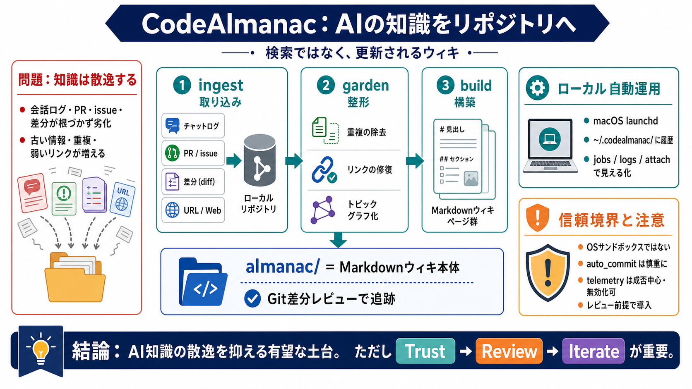

Releases · anthropics/claude-code
[Reload](https://github.com/anthropics/claude-code/releases) to refresh your session.You signed out in another tab or wi…

[Reload](https://github.com/anthropics/claude-code/releases) to refresh your session.You signed out in another tab or wi…
**Claude Code** costs **$20/month** on the Pro plan ($17 annual), **$100/month on Max 5x**, **$200/month on Max 20x**, *…
# Claude Code Pricing. Complete Claude AI price breakdown including Pro (from $17/month annually) vs Max (from $100/mont…
Claude Code FREE Setup: Stop Paying for Claude! (No Fluff) Emma Explains AI 2820 subscribers 836 views 20 Apr 2026 Want…
# Code execution tool. The code execution tool allows Claude to run Bash commands and manipulate files, including writin…